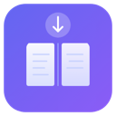

10 collections/day includedCollect Any Web Page as a NotebookLM Source — In One Click
Save articles, web pages, and YouTube videos as formatted NotebookLM sources. Right-click to collect, side panel to manage, one click to send.
Pro $2.99/mo or $19.99/yr — unlimited collections + auto-sync
NotebookLM Source Collector is a free Chrome extension that lets you collect web pages, articles, and YouTube videos as formatted sources for Google NotebookLM. Right-click any page or select specific text to save it to your collection in the side panel. Each source is automatically formatted with title, URL, meta description, and key content — ready to paste into NotebookLM.
- One-click collection via right-click context menu (full page or selected text)
- YouTube metadata extraction (video title, channel, duration, description)
- Side panel for managing, searching, and organizing collected sources
- Copy & Open NLM: copies formatted source to clipboard and opens NotebookLM in one action
- Send to NLM (Pro): automatically sends sources directly to your NotebookLM notebook — no manual paste needed
Key Features
Right-Click to Collect
Right-click any web page or selected text and choose "Collect for NotebookLM." The page title, URL, description, and content are saved instantly to your side panel collection.
YouTube Metadata Extraction
On YouTube pages, the extension automatically extracts video title, channel name, duration, and description — formatted as a complete NotebookLM-ready source.
Side Panel Management
View, search, filter, and organize all your collected sources in a dedicated side panel. Edit source content before sending to NotebookLM.
Copy & Open NLM
One click copies the formatted source to your clipboard and opens NotebookLM in a new tab. Paste it directly into the "Add source" dialog.
Auto-Sync to NotebookLM (Pro)
Set your notebook URL once. Click "Send to NLM" and the source is delivered directly into NotebookLM — no copy, no paste, no tab switching.
Minimal Permissions
Only requests activeTab, contextMenus, sidePanel, and storage. No debugger permission, no broad host access. Your browsing stays private.
How It Works
Right-Click Any Page
Browse normally. When you find an article, blog post, or YouTube video worth saving, right-click and select "Collect for NotebookLM" (or "Collect Selection" for highlighted text).
Review in Side Panel
Open the side panel to see all collected sources. Each entry shows title, URL, a content preview, and timestamp. Search or filter to find what you need.
Send to NotebookLM
Click "Copy & Open NLM" to copy the source and open NotebookLM, then paste. Or upgrade to Pro and click "Send to NLM" for automatic delivery with no manual steps.
Who Is It For?
Researchers & Academics
Collect papers, articles, and reference material from across the web. Build comprehensive source libraries for literature reviews and thesis projects.
Students
Save lecture materials, online tutorials, and YouTube educational videos. Organize study sources by topic and send them to NotebookLM for AI-assisted summarization.
Content Creators & PMs
Research competitors, collect inspiration, and gather reference material. Keep all your sources organized in one place before synthesizing them in NotebookLM.
Free vs Pro
| Feature | Free | Pro |
|---|---|---|
| Collections per day | 10 | Unlimited |
| Right-click collect (full page & selection) | Yes | Yes |
| YouTube metadata extraction | Yes | Yes |
| Side panel management | Yes | Yes |
| Copy & Open NLM | Yes | Yes |
| Send to NLM (auto-sync) | — | Yes |
| Priority support | — | Yes |
Pro: $2.99/month · $19.99/year · $4.99 lifetime
FAQ
How do I add web pages to NotebookLM using this extension?
Right-click any web page and select "Collect for NotebookLM." The page title, URL, and content summary are saved to your side panel. Click "Copy & Open NLM" to paste it into NotebookLM, or upgrade to Pro for automatic sync.
Is NotebookLM Source Collector free?
Yes. The free plan includes 10 collections per day with manual copy-paste workflow. Pro ($2.99/month or $19.99/year) adds unlimited collections and automatic sync to NotebookLM.
How is this different from Kortex?
NotebookLM Source Collector is lightweight (no debugger permission required), focused purely on source collection, and costs 1/10 the price. Kortex offers more features but requires invasive browser permissions and is more complex to use.
Can I save YouTube videos as NotebookLM sources?
Yes. The extension automatically extracts YouTube video metadata including title, channel name, duration, and description, then formats it as a NotebookLM-ready source.
What does "Send to NLM" do?
Send to NLM (Pro feature) automatically opens your configured NotebookLM notebook and pastes the collected source directly — no manual copy-paste needed. You set your notebook URL once in settings.